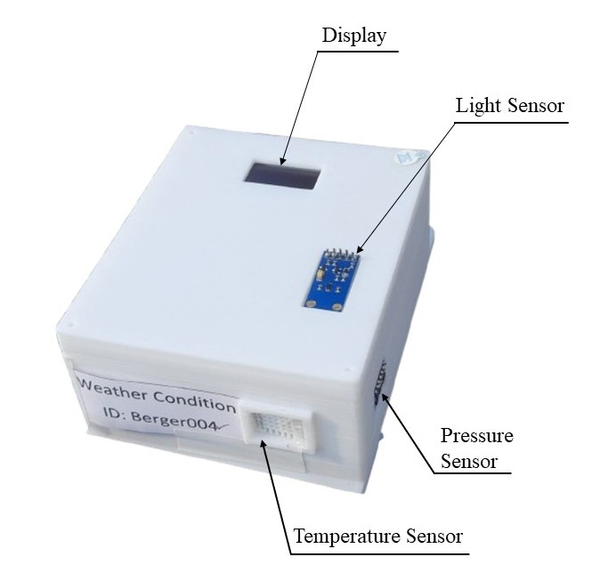

Multi-Seasonal Cool Paint IoT Monitoring Network
Distributed Microclimate & Building Envelope IoT Sensing Architecture Deployed on the BUET ECE Rooftop.
System Architecture & Hardware Specifications
Passive sub-ambient radiative cooling coatings must be evaluated under long-term tropical outdoor conditions encompassing extreme ultraviolet irradiance, high humidity, and heavy monsoon rains. This project engineered an autonomous, multi-node IoT telemetry network continuously monitoring ambient weather and internal thermal dynamics across three identical pilot testbed structures on the BUET ECE department rooftop.
| Subsystem | Engineering Specification |
|---|---|
| Physical Testbed Units | Three identical 5 mm fibre-cement cubic house models installed side-by-side: Unit A (Uncoated Control Reference), Unit B (Commercial Conventional White Paint), and Unit C (Nanostructured Cool Paint: HGM + nano-BaSO4 roof & IR-pigment + nano-ZnO walls). |
| Compute & Acquisition Nodes | Espressif ESP32 microcontrollers executing deterministic 1-minute synchronous sampling loops across all internal and external sensor arrays. |
| Sensor Suite |
Internal Air: Calibrated DHT22 (±0.5 °C temp, ±2% RH).Envelope Surface: Direct-contact waterproof DS18B20 1-Wire thermal probes embedded beneath the roof and wall coatings.Ambient Weather: High-dynamic-range BH1750 digital ambient light sensor (0–65535 lx) and MPL3115A2 precision barometric pressure sensor.
|
| Telemetry & Data Pipeline | Dual-redundant telemetry stack streaming JSON packets over MQTT to AWS IoT Core and ThingSpeak cloud backends, with local SPI micro-SD card binary buffering to prevent data loss during campus network outages. |
| Analytical Modeling | ISO 6946:2017 thermal envelope scaling model (κeff = 0.372) calculating indoor cooling loads and projecting annual kWh electrical savings for a standard 4-storey residential building in Dhaka. |
Experimental Field Gallery


Related Manuscript
"Multi-Seasonal Assessment of Nanostructured Cool Paints for Passive Radiative Cooling in Tropical Climates Using IoT Sensor Networks" — Md. Abdus Shakur Siam, Md. Fahim Hossain, Ahmed Imtiaz, A. S. M. Obaidullah Mahmud, Muhammad Anisuzzaman Talukder. Manuscript Complete; Pending Submission, Elsevier Energy and Buildings (2026).
→ View Paper Abstract & BibTeX